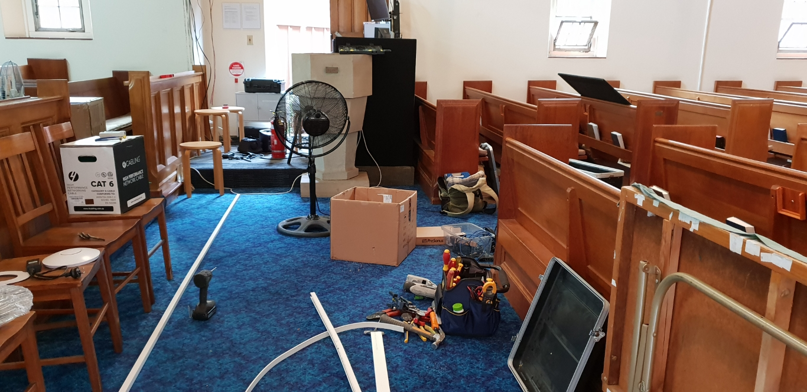
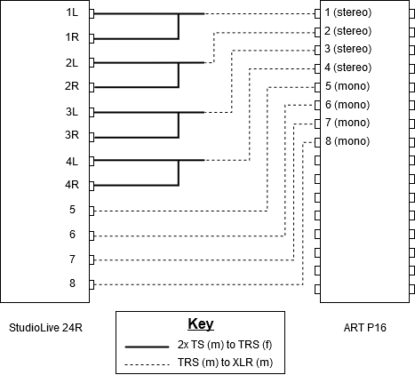
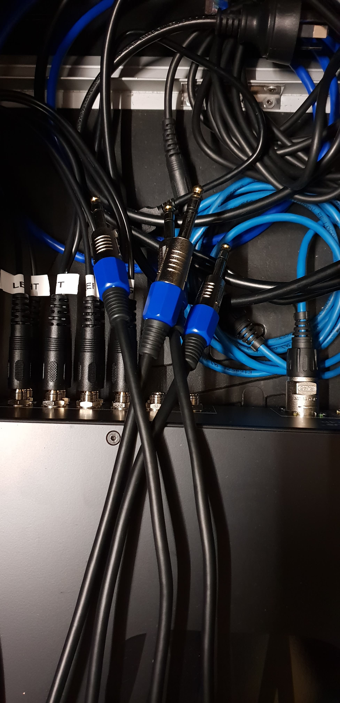

SWEC Audio Mixer Upgrade
Posted

My church recently went from an analog audio console (Yamaha MG24/14FX) to a digital console, the Presonus StudioLive 16.
Why digital?
- A digital sound console packs a whole bunch of feature into a small(er than what an analogue system would need) form factor
- Software effects replace the need for purchasing hardware for each effect, which are both costly, and occupy physical space
- Presets and Scenes allow the mixer to recall specific layouts and settings, and to reset the channel configuration to a standard setup
- More inputs via a networked stagebox
- Remote control over USB and network
- Multitrack recording
- Simpler interface (well, less buttons and knobs)
- In-Ear Monitor capability
The Parts
| Item | Type | Price | Link |
|---|---|---|---|
| PreSonus StudioLive 16 Series III | Console | AU$2399.20 | Product |
| PreSonus StudioLive 24R Series III | Stage Box / Console | AU$1279.20 | Product |
| 8x TRS (m) to XLR (m) | Cable | $AU$19.92 | eBay |
| 4x TRS (m) to 2x TS (m) | Cable | AU$16.56 | eBay |
| ARTcessories P16 | XLR Patch Bay | AU$149 | Product |
| 2x Neutrik NE8MC | Cable Connector | AU$11.83 | Product |
| Ethernet Cables | Cable | $ | - |
| ?x Behringer PowerPlay PM1 | Belt Pack | AU$52 x n | Product |
| XLR Cables | Cable | $$ | - |
Installation
Installation took a little over 8 hours doing something like the following:
- Running Ethernet cables
- Running speaker cables
- Putting things into the stage rack
- Installing mezzanine speaker pair
- Installing rear speaker pair
- Installing 4-zone speaker amplifier
- Setting up each channel strip on the mixer
- Customising the user layer on the mixer
- (slightly) Tuning the DSP
And don’t forget lunch - which my friend’s mother kindly prepared for me!

In-Ear Monitoring
Essentially I had two types of IEM mixes, 4 mono mixes and 4 stereo mixes.
For the mono mixes it was simple, a TRS (m) to XLR was sufficient
For the stereo mixes, I had to take two mono outputs, combine them into a stereo TRS, and convert it to an XLR cable.

The Behringer PM1 belt packs use pin 1 for ground, and pins 2 & 3 for left and right.
Absolutely no standard for stereo over single XLR, huh.
24R to the P16
The StudioLive 24R had 12 balanced TRS outputs, which I wanted to connect to the the ARTcessories P16 XLR Patch Pay.
Note that these are mono outputs, so I had to purchase a few 2x TS (m) to TRS (f) cables
XLR to TRS Cables
The cables that I bought were TOO SHORT OH NO!
I had spare microphone cable cuttings lying around, so thankfully I was able to make my own.
(My soldering iron is screwed up, the tip wasn’t hot and I had to use the sides of the iron to do my soldering…)

Alternatively, I had some XLR to TS cables lying around, though for all of them pins 1 and 2 were bridged.
I could have desoldered them, and used copper conductive tape to bridge pins 2 and 3, but I didn’t want to makeshift it
These cables were connected to the ARTcessories P16 XLR Patch Bay
PM1
The Behringer PM1 is a battery-less belt back that takes in a ‘Stereo XLR’ and converts it to a 1⁄8” TRS jack.
There’s a volume knob for personal level control
Stereo XLR Pin-out
Pin 1 - GND
Pin 2 - Left
Pin 3 - Right